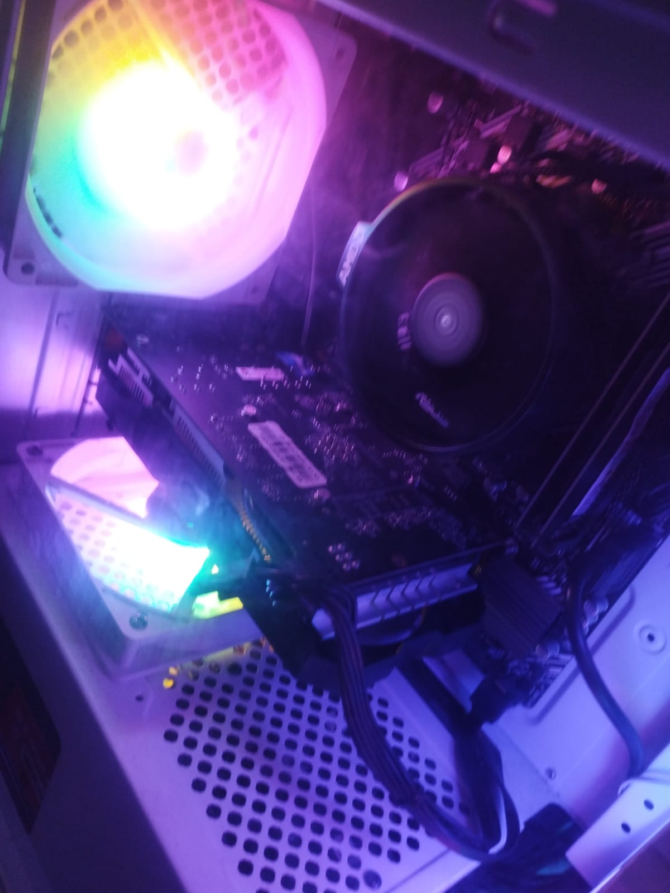

Praktik
Perakitan & Troubleshooting PC
Merakit dan membongkar PC: memasang komponen seperti motherboard, RAM, storage, dan power supply, merapikan kabel, lalu memastikan perangkat menyala dan berfungsi normal.